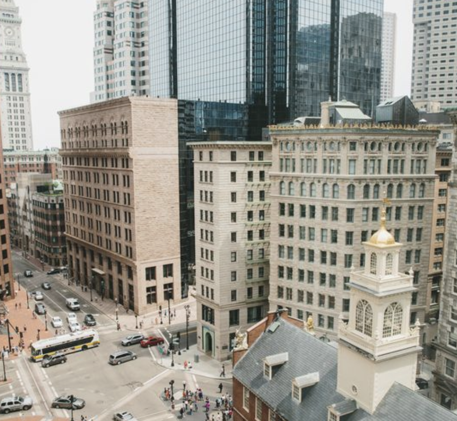
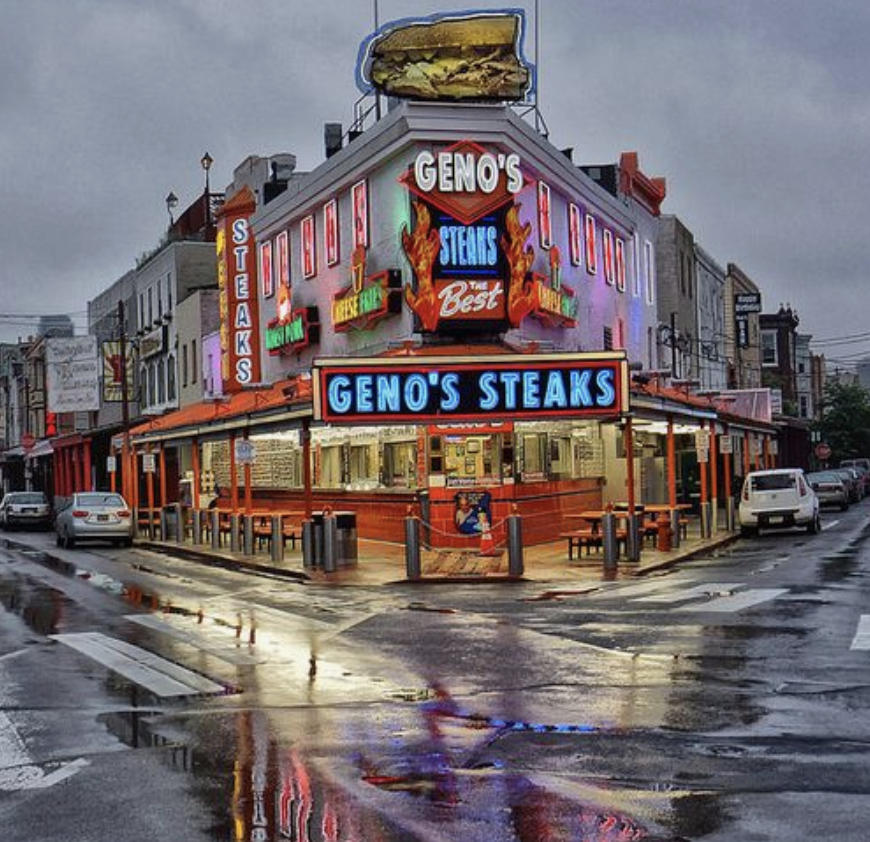

Boston baby, Our home
Love notes bay, I love witing them to you and i have kept all the ones form you, I always will. I love you and I keep everything you give me so near and dear to my heart. xox
I look forward to the Cranivals with you over the summer and even at the shore when we are at the boardwalk
You know how much I love pur long dirves togehter baby, just sitting in the car listening to music. I love you and I love us. I could sit with you forever
I dont know why but ever since high school dad hats make me think of you my love. I see them and I smile and if it has something cut eon it especially I will think of you. i love you
Hedgehogs! I see so many hedge hog stuffed animals and I want to get you them all! I love you and you are so cute always baby
Ice cream!!! Gabels and the shore and dots, all ice cream is good for us :) Green Tea ice cream !
Being in love baby, Love just makes me think of you, all the couples and such I see, it brings so many smiles to my face baby, I love you.
Drive ins baby and even normal mpvies whether a theather or on the laptop. i love you, ach tme is a new expierence and whether we actually watch the movie or not, I love it
Anytime I hear a one of our many songs or a new good song, I cant wait to tell you. Always brings a smile on my face, love you lana

Thank you for taking me to philly fo the first and second and third and fourth time my love
The shore, our second home baby, and forever, our summer tradition
Hypebeast stuff baby, I always think of you when I see anything I know you have talked about before, even related ot the brand. I love you
Chinatown baby, where you introduced me to so many foods and where we have spent the majority of our time together when we are in New York
Roses, Anything pretty I'd want to show my Baby
Strawberries because I always want to make you some Chocolate covered strawberries
The uh.. special cookies that make us laugh :)